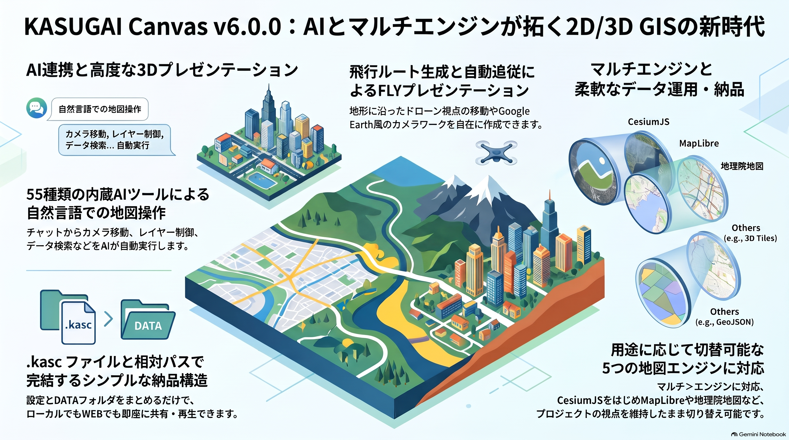

マルチエンジンの正本ドキュメントは以下に集約されています（本ページは V6 テーマの位置付け紹介）： 使い方・内部構成／ ブラウザ WebGIS（外部ホスト配信）／ 実装詳細（システム基本構成）。
マルチエンジン
同じ .kasc プロジェクトを、用途に合った地図エンジンで再生できるようにするのが V6 のテーマです。web/ をエンジン別フロント（Cesium・MapLibre・OpenLayers・Leaflet・GSI Maps※調整中・Navara※試験）に分割し、.kasc をエンジン非依存のプロジェクト形式として各エンジンで再生する構成です。メインエンジンは CesiumJS（開発の主対象・既定エンジン）で、他エンジンは .kasc プレイヤーとしての互換実装です。プロジェクトデータ（projects/）はエンジン非依存で、描画に依存しないコードは web/shared/ に集約しています。
ねらい: 同じ .kasc を「高機能3D（Cesium）」「軽量2D（Leaflet 等）」「地理院地図の UI（GSI Maps）」など、配布先の環境・用途に合ったエンジンで開けます。納品物は .kasc+DATA/+エンジン一式の静的ファイルだけで成立し、受け取り側がエンジンを選ぶ余地も残せます。エンジン（プレイヤー本体）とデータ（.kasc + DATA/）が分離しているため、CDN が配信するエンジンに外部ホストの .kasc を ?kasc= で指定して開くサーバレスな WebGIS がメインの利用形態になりました。

🧭 エンジン構成
| エンジン | 位置づけ | 対応範囲 |
|---|---|---|
cesium | メイン・既定（3D） | 全行タイプ・FLY・AI ツール・プラグイン・地形/DEM ドレープ。KASUGAI の全機能が集約される唯一のフル機能エンジン |
maplibre | 2D プレイヤー | WebGL ベース。全ベクター行・QML・duckdb/sql・属性 UI。3dtiles: は deck.gl 遅延ロード＋3D Tiles ドレープ対応。mvt:/pmtiles: も読める |
openlayers | 2D プレイヤー | OGC 準拠最良の 2D エンジン。MapLibre 相当の .kasc 再生（QML・duckdb/sql・属性 UI） |
leaflet | 2D プレイヤー | 約40KBの超軽量。WebGL 不要で古いブラウザでも動作。3dtiles: は deck.gl オーバーレイで遅延ロード |
gsimaps | 中間エンジン・調整中 | vendored 地理院地図を iframe で組み込み、.kasc を作図リスト・外部タイルとして再生。上流コード無改変 |
navara | 試験的（写実3D） | @navaramap/three（Rust/WASM + Three.js）によるフォトリアルシーン。ベクター・3dtiles:・ベースマップを再生。wms:/wmts: 未対応 |
各エンジンの詳細な対応範囲・特性比較は 使い方 — マルチエンジン・ライブラリ を参照してください。
🧩 V6 の構成要素
🔀 エンジン選択と切替
?engine=cesium|maplibre|openlayers|leaflet|gsimaps|navara で起動エンジンを選択（既定 cesium）。パネルの切替リンクはプロジェクト・カメラ位置・インスペクター編集・レイヤ可視性を引き継ぐ
📄 状態引継ぎ（session-state）
.kasc＝初期値に対し、稼働中の現在値（カメラ・可視性・テーマ・ベースマップ・インスペクタ）を localStorage kasugai:session-state（Cesium 規約の正典）へ常時同期。切替先エンジンが同じ正典を引き継ぐ
🗺️ 2D プレイヤー（MapLibre / OpenLayers / Leaflet）
全ベクター行・QML・duckdb/sql・属性 UI の .kasc 再生。3dtiles: は deck.gl を遅延ロードして表示・3D Tiles ドレープにも対応
🗾 GSI Maps エンジン（調整中）
vendored 地理院地図を iframe で組み込む中間エンジン。.kasc を作図リスト・外部タイルとして再生し、Globe 上へのレイヤ注入・地理院地図レイヤの .kasc 取り込みも可能
🌍 Navara エンジン（試験的）
@navaramap/three（Rust/WASM + Three.js）による写実 3D プレゼンエンジン。ベクター行・3dtiles:・ベースマップをフォトリアルシーン（大気・太陽・地形）で描画
🧩 エンジン非依存コア（shared/）
.kasc ローダー・ベクターデコーダー・QML コンパイラ・属性ウィジェット・AI チャット・印刷を web/shared/ に集約。新エンジン追加コストを低減
🌐 CDN ホスト版（kasugai-canvas-web）
エンジン一式を GitHub Pages で stable/・unstable/ の2チャンネル配信。?kasc=<url>・?kasc=local で Canvas 未インストール環境でもブラウザ再生。tools/publish_cdn.py で web/ から同期
🌐💻 利用形態 — ブラウザ WebGIS とローカルアプリ
マルチエンジン構成（Cesium＋4互換プレイヤー＋試験的 Navara）の利用形態は2系統です。メインはインストール不要のブラウザ WebGIS（CDN エンジン × 外部ホストの .kasc）、フル機能が必要な場合はローカルアプリを使います。
【WebGIS】ブラウザ WebGIS（メイン・インストール不要）
CDN（kasugai-canvas-web）が配信するエンジンに、外部ホストの .kasc を ?kasc= で指定して開くサーバレスな WebGIS です。QGIS の geo_webview でエクスポートした .kasc+DATA/ を任意の静的ホストに置くだけで使えます。公開デモもこの形態の実例です。
詳細は ブラウザ WebGIS ガイド（必須ファイル・?kasc= 仕様・公開デモ）を参照してください。
【アプリ】ローカルアプリ kasugai_canvas.exe（フル機能）
インストールして使うフル機能版です（QGIS連携・ファイル保存・rclone クラウド連携・AIブリッジなど、localhost:8510 で動作）。配布物は download/ フォルダから直接ダウンロードできます。インストーラー版を推奨します — .kasc ファイルのダブルクリック起動（拡張子の関連付け＝外部プロジェクト登録）はインストーラー版でのみ利用できます。
詳しい手順は ローカルアプリのガイド を参照してください。
🔗 連携構成図 — どこで動くか
KASUGAI Canvas は エンジン（プレイヤー本体）とデータ（.kasc + DATA/）が分離した設計です。開発の起点は kasugai_canvas リポジトリの web/（エンジン正本）で、そこから GitHub Pages CDN（kasugai-canvas-web） と 配布 ZIP（ローカルアプリ） の2経路で発行されます。メインの使い方は、CDN が配信するエンジンに静的ホスト上の .kasc を ?kasc= で指定して開く サーバレスな WebGIS です（インストール不要）。
flowchart TB REPO["kasugai_canvas リポジトリ（開発の起点）
web/ = エンジン正本 ＋ server/ = Rust アプリ"] REPO ==>|"tools/publish_cdn.py"| CDN["GitHub Pages CDN（メイン）
kasugai-canvas-web
stable/・unstable/
cesium / maplibre / openlayers / leaflet / gsimaps / navara(試験)"] REPO ==>|"run.py -B → ZIP（自動更新）"| APP["ローカルアプリ
kasugai_canvas.exe :8510
フル機能（QGIS連携・保存・rclone・AIブリッジ）"] UP["vendor 上流オリジナル
jsdelivr / raw.githubusercontent
（各 engine の vendor.json でピン）"] UP -.->|"vendor/*（gsimaps・navara）
SW が同一オリジン中継"| APP UP -.->|"vendor/*（gsimaps・navara）
SW が同一オリジン中継"| WEB QGIS["QGIS + geo_webview"] -->|"エクスポート"| DATA[".kasc + DATA/ のみ配置
任意の静的ホスト or :8089
（エンジンは CDN 経由）"] CDN ==>|"エンジンを配信"| WEB["ブラウザ WebGIS（メインの利用形態）
…/<engine>/?kasc=<.kascのURL>
CDN 経由ならインストール不要"] DATA -.->|"?kasc= で指定"| WEB QGIS -.->|"▶ Canvas で登録"| APP AGENTS["外部エージェント
GitHub Copilot / Devin(acp) / Antigravity / ACP対応CLI
要各CLI・本人認証"] ==>|"AI が地図を制御
（reply/actions を返す）"| BRIDGE["AIブリッジハブ bridge-hub.exe
アプリ・WebGIS 共通 =8511
チャット ─POST /agent {provider,...}→
選択中プロバイダのみ内部起動"] APP ---|"起動時に未起動なら自動起動（内蔵なし）"| BRIDGE CDN -.->|"download/bridge-hub.exe(.zip) を配信"| BRIDGE BRIDGE -.->|"同一PCなら /health 検出（:8511）で接続"| WEB AIAPI["AI API（内蔵AI）
Gemini / OpenAI互換
BYOキー or /api/gemini キー隠蔽プロキシ
（workers・Cloud Run・ローカル）"] ==>|"AI が地図を制御
（function calling）"| WEB WEB --- DEMO["公開デモ（WebGIS の実例）
CDNホスト版＝CDN経由
Cloudflare Pages / Workers / Cloud Run
＝web/自前配信＋認証・/api/*"] classDef webgis fill:#eef0ff,stroke:#667eea,color:#1a2230 classDef localapp fill:#e9f7ee,stroke:#2e9e56,color:#1a2230 classDef ai fill:#f4eaff,stroke:#8a4fff,color:#1a2230 classDef neutral fill:#f6f8fa,stroke:#9aa5b1,color:#5a6577 class WEB,CDN webgis class APP localapp class BRIDGE,AGENTS,AIAPI ai class QGIS,DATA,DEMO neutral
再生 URL の構成
再生 URL …/<stage>/<engine>/?kasc=<.kascのURL> の意味:
| 要素 | 値 | 意味 |
|---|---|---|
<stage> |
stable（既定）/ unstable |
CDN の配信チャンネル。stable=安定版・unstable=開発版 |
<engine> |
cesium / maplibre / openlayers / leaflet / gsimaps / navara |
再生に使う描画エンジン。cesium がメイン（3D・フル機能）、他は同じ .kasc を読む互換プレイヤー。navara は試験的エンジン（写実3D） |
?kasc= |
.kasc ファイルの URL（要 URL エンコード） | DATA/ 等の相対参照は .kasc のある URL 基準で解決されるため、.kasc と DATA/ は同じフォルダに置く |
実行時の供給元 — 何をどこから読むか
web/ 一式は publish_cdn.py が CDN へ丸ごとミラーするため、shared/ 等の同じファイルが CDN と配布物（ZIP・インストーラー）の両方に存在します。どちらを読むかは開いているページのオリジンで決まります（エンジンコードは全て相対パス参照）。外部を参照するのは /vendor/*（gsimaps・navara）のみで、実体はどこにも置かず Service Worker（vendor-proxy-sw.js＝vendor 同一オリジン中継・SW 制御）が vendor.json のピン先（jsdelivr・raw.githubusercontent）からどのオリジンでも同一オリジン供給します（Service Worker 前提）。
| 取得物 | ローカルアプリ（:8510） | ブラウザ WebGIS（CDN エンジン） |
|---|---|---|
| プレイヤーコード （ web/<engine>/・shared/） |
web/ を複写してアプリに同梱（ :8510 がローカル配信） |
CDN から配信 |
| vendored ライブラリ （ vendor/gsimaps/・vendor/navara/） |
同梱せず → vendor-proxy-sw.js（vendor 同一オリジン中継・SW 制御）が vendor.json のピン先 CDN から同一オリジン中継（Service Worker 前提） |
同左 |
| 描画ライブラリ （CesiumJS・Leaflet・MapLibre・OpenLayers・DuckDB-WASM 等） |
jsdelivr / unpkg | jsdelivr / unpkg |
| 地図タイル・データ | 地理院・OSM 等の外部サーバー | 同左 |
静的ホストへ .kasc+DATA/ だけを置く通常の WebGIS 配信では、エンジンは常に CDN（kasugai-canvas-web）から読み込まれます。機能面ではローカルアプリだけがフル機能（QGIS連携・ファイル保存・rclone・ブリッジハブの自動起動）を持ちます。AI の接続系統とブリッジハブの構成（:8511 に一本化・bridge-hub.zip）は「3. AI — API 直通とブリッジ経由」にまとめています。CDN 経由はブラウザ閲覧中心です。なおローカルアプリも vendored 地理院地図（gsimaps vendor・約75MB）は同梱せず、/vendor/* のミスを Service Worker が上流オリジナル（vendor.json のピン先 CDN）へ中継して同一オリジン供給します。さらに描画ライブラリ（CesiumJS・Leaflet・MapLibre・OpenLayers・DuckDB-WASM 等）は jsdelivr/unpkg から読み込むため、配布形態に関わらずブラウザ実行は常にオンライン前提です（試験的エンジン Navara も Worker の同一オリジン要件のため vendor/navara/ パス経由だが、実体の供給は同じく SW 中継）。公開デモはいずれもこの WebGIS の実例で、Cloudflare Pages/Workers・Cloud Run 版は web/ を自前配信し認証・/api/* を付加した構成です（基本の配布経路は CDN + 配布 ZIP の2系統）。データの配信元は静的ホストのほか、QGIS 側の geo_webview 内蔵サーバー（127.0.0.1:8089 /export-data/）からも読めます（自分の PC 上のみ有効）。詳細は kasugai-canvas-web ガイド を参照してください。